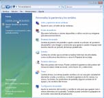
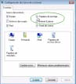

La papelera de reciclaje en Windows Vista
Mostrar y ocultar la papelera de reciclaje.
En Windows XP no puedes eliminar la papelera de reciclaje por el método tradicional de eliminar iconos; botón derecho / Eliminar. Si desaparece del sistema puede ser por un fallo o porque el archivo está corrupto, la manera de recuperarla pasa por restaurar el sistema. En Windows Vista sin embargo sí que puedes reciclar la papelera de reciclaje, hay una opción del escritorio que puede ocultarse y restaurarse con facilidad al igual que Mi PC (que ahora se llama Equipo) o Mis sitios de Red (que ahora se llama Red) etc.
Esto se hace en:
Panel de Control / Personalización o bien botón derecho sobre el escritorio / Personalización
Y luego en la columna Tareas pulsamos en Cambiar iconos del escritorio

En la siguiente ventana, Configuración de los iconos de escritorio, podemos volver a marcar la Papelera de Reciclaje si la hemos eliminado y pulsar Aceptar.

Andaluzsoy